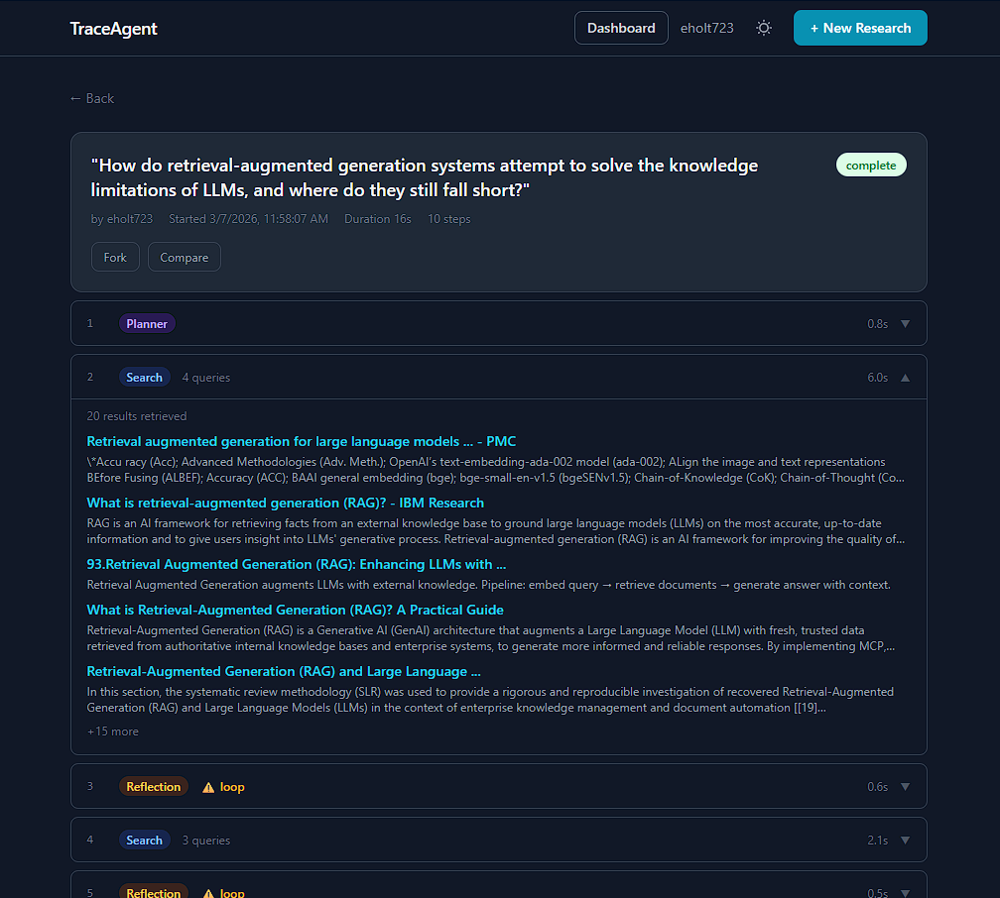

TraceAgent — Observable Agentic Research Platform
Python · FastAPI · Groq · Tavily · React · PostgreSQL · Docker · AWS
Built around a four-stage pipeline — planner, search, reflection, and synthesis — where the reflection stage evaluates result adequacy and conditionally loops back to search (up to 3 times) with refined queries before report generation. Every internal decision is persisted to PostgreSQL and streamed to the browser in real time via WebSocket.
Deployed to Hugging Face Spaces (Docker) and AWS EC2 (t3.micro) + RDS PostgreSQL (db.t4g.micro, VPC-only) · CloudWatch Logs via watchtower · 6 custom CloudWatch Metrics per run (RunsCompleted, PipelineDurationMs, ReflectionLoops, and more) feeding a live pipeline dashboard · Public activity feed — browse all runs with full attribution · Fork any run with a modified query, lineage tracked · Side-by-side run comparison · Multi-stage build bundles React/Vite frontend with FastAPI backend
